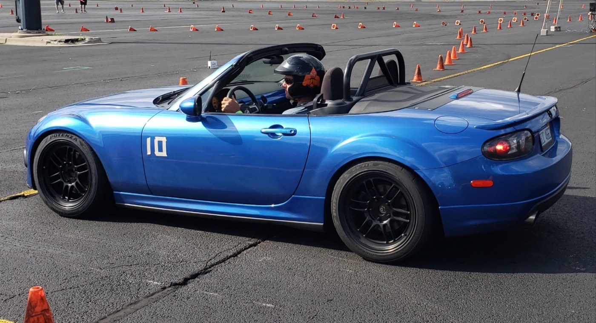
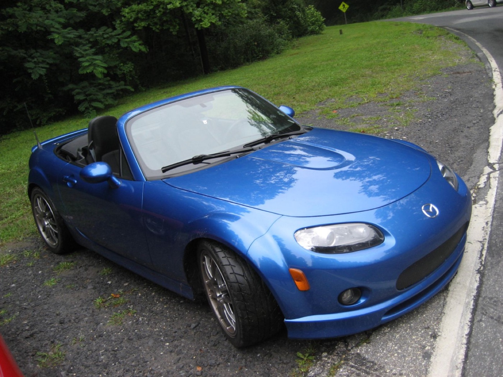
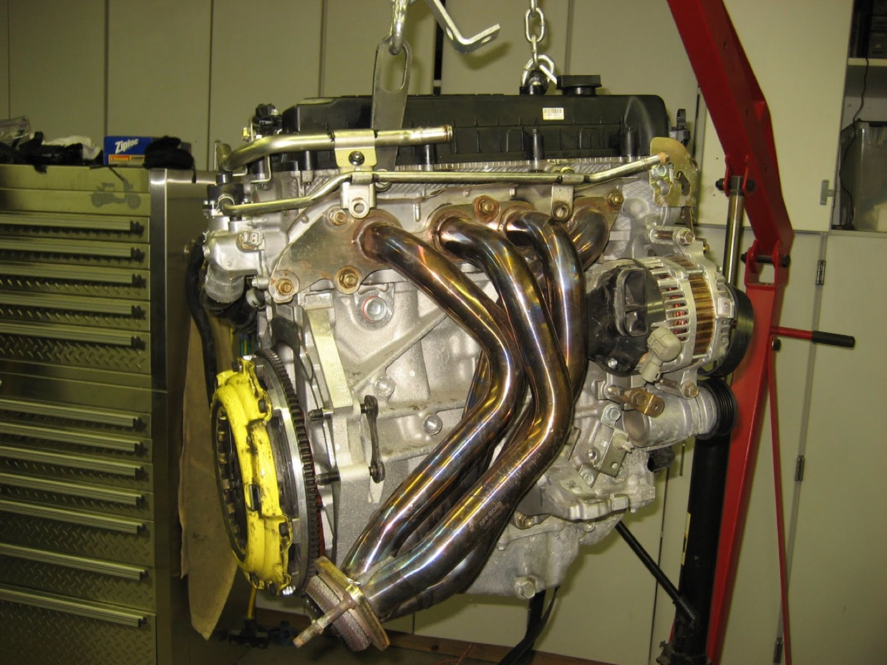
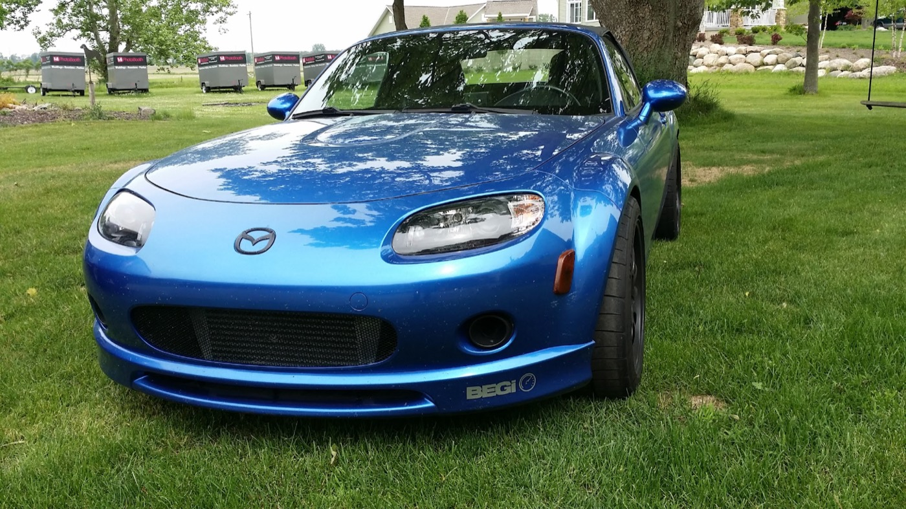
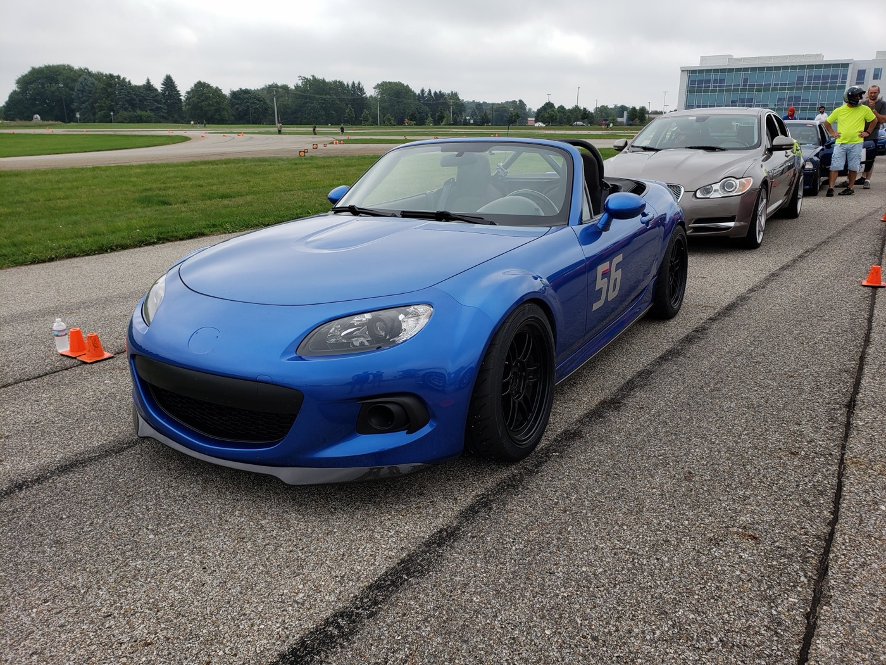

One car, many lives
A 2006 MX-5 Sport, bought new and rebuilt four times. Same chassis, a different car every few years.
- CAR
- 2006 MX-5 Sportbought new, limited-slip diff
- OWNED
- 2006 – todaythe only owner
- VOLUMES
- Fourone for each version of the car
- ENGINES
- Fourstock, forged, turbo, V6
- INDUCTION
- NA → SC → turbo → NA2.0 L four, then a 3.6 L six
- NOW
- GM LFX 3.6 L V6since 2018
I never sold this car. Each time it hit a limit I rebuilt it instead, and every volume here starts where the last one ran out.
Two years of bolt-ons made it handle; then it needed power, so it got a Cosworth supercharger. Two engines later it went turbo, and for the first time the tune just stayed put. The turbo made the power but broke a gearbox every two years, so the last rebuild replaced the whole drivetrain with a Camaro V6, six-speed and diff.
Read the volumes in order for the whole story, or jump to the version you care about.
“This car feels as if it came this way. The power matches the chassis perfectly.”VOL 4 · DRIVING IMPRESSIONS · AUG 2018

RETIRED01Bolt-ons
A new car, and two years of finding out which parts actually make it better.

RETIRED02Cosworth supercharger
A Cosworth supercharger, a Cosworth-built forged engine, 16 psi and two blown engines.

RETIRED03BEGi turbo
A turbo, a proper datalogger, and the first tune that just stayed put.

RUNNING04LFX V6
A stock Camaro V6, six-speed and diff. Feels like it came that way.
Pieced together from the threads I started on miata.net as Blue Meany between 2006 and 2020. Each volume lists its own sources.